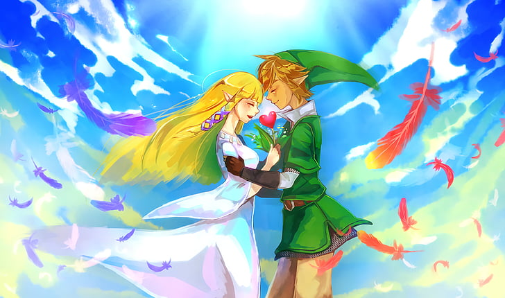
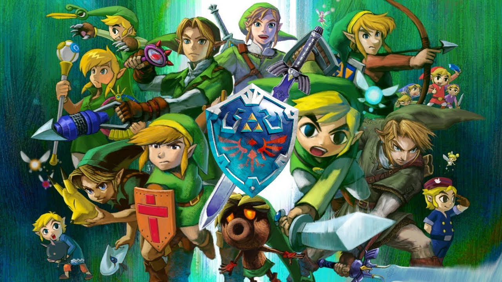
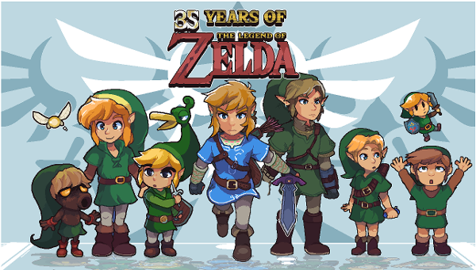

Um breve resumo sobre essa obra de arte
Vamos começar por uma breve apresentação dos personagens principais, Link (sim o nome dele é Link, clicar no nome dele não vai te direcionar para lugar algum kkk), o clássico cavaleiro “dourado” e o protagonista dos jogos; Princesa Zelda, como o nome diz ela é princesa que precisa ser salva, apesar de que na maior parte das vezes ela se auto ajuda a ser salva dando elementos muito importantes a Link para terminar sua jornada o que faz dela uma co-protagonista. Ganondorf, o famoso vilão sempre quer destruir a terra conhecida e transformá-la num verdadeiro inferno. E se você imaginou um baita crush metido a romance entre Link e a Princesa você com certeza acertou, apesar das várias opções amorosas para ambos, tanto Link como Zelda escolheram um ao outro.


A história principal geralmente gira em torno de Hyrule, a cidade da qual a princesa vem, contendo vários povos envolvidos em suas histórias como os Zoras, o povo da "água”, dependendo do jogo eles são amigos ou inimigos mas uma coisa que se mantém é que sempre fornecem instrumentos muito importantes para facilitar a jornada de Link. O vilarejo de Kakariko, é como a periferia de Hyrule, apesar de não serem ricos são um povo feliz quando não são infernizados pelos malfeitos de Ganondorf. Os Gorons, são como um povo da “pedra” como você já deve prever eles também são sempre uma parte importante da história, fornecendo cenários incríveis para o desenvolvimento do personagem, dando itens ao protagonista, tratando Link como um verdadeiro herói.
Outros objetos e poderes que são importantes para compreender essa história, a famosa Master Sword (Espada Mestra) e a Triforce. A Master Sword é uma espada cujo poder só pode ser despertado e usado se o portador dela tiver os valores corretos de um herói, além de ser a única espada cujo poder pode destruir o mal, ela foi forjada pelos Deuses e fincada numa pedra à espera do despertar. Já a triforce é a união da força de três Deusas, é dito que quem a possuir controlará o destino de Hyrule, o que é mais que provado em praticamente todas as versões do jogo, quando nas mãos erradas tudo acaba desolado e ao ir para as mãos de Link, capaz de corrigir os estragos e trazer paz a todos. Além desses existem outras importantes armas e objetos, como o Escudo de Hylian, a Ocarina e a Ocarina do Tempo,um Cajado que lança feitiços, o Hookshot, o Arco e flecha, o Martelo, o Boomerang entre outras magias e artefatos mágicos.

Por que Zelda é muito melhor que Free Fire?

Ora pois, DIFÍCIL ACHAR ALGUMA COISA QUE NÃO SEJA MELHOR que Faísca Grátis, quem dirá algo como Zelda. Enfim, este tópico foi criado para mostrar a grandiosidade dessa franquia de jogos em comparação com os outros, que desde 1986 vem liderando as vendas da Nintendo e também do Nintendo Switch em relação aos outros consoles atualmente, viciando cada vez mais nerds, cativando cada um com suas mais diversas aventuras, que variam de aventuras solo à jogos que precisam de de 4 pessoas conectadas para conseguir chegar ao objetivo final. Além dessas versões de Zelda existem também os jogos em que ele vira um lobo através da magia, uma em que ele é criado no meio da floresta de Kokiri, uma versão desenvolvida de maneira mais “fofinha” e com uma história mais infantil, entre muitas outras, demonstrando que The Legend of Zelda consegue agradar diversos tipos de públicos, mesmo os jogos mais antigos com gráficos reduzidos encantam as pessoas e fazem muitas voltarem a joga-los.
Uma Trilha sonora que até seus avós conhecem

Vamos falar da idade então, Zelda tem 35 anos, e uma das coisas que o deixou muito famoso assim como diversos outros jogos da Nintendo, foram as muitas trilhas sonoras, sendo compostas principalmente por Koji Kondo, que com seus instrumentos é capaz de fazer mágica e dar 200 vezes mais vida para qualquer jogo. Indo de um modelo padrão 2D para aquela época que rodava nos clássicos Nintendo e Super Nintendo, evoluindo disso para o conhecido Nintendo 64 que já rodava jogos em 3D com uma baixa resolução porém uma história impecável. Até atualmente, possuindo jogos no Nintendo Switch, um console atual com gráficos em 3D (obviamente), de resoluções que podem chegar a 4k se emuladas em um computador com potência, além dos movimentos interativos etc. ALERTA DE OBRA PRIMA ABAIXO
Links